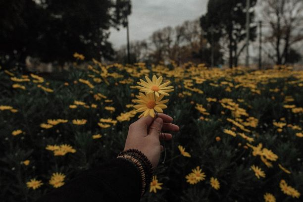
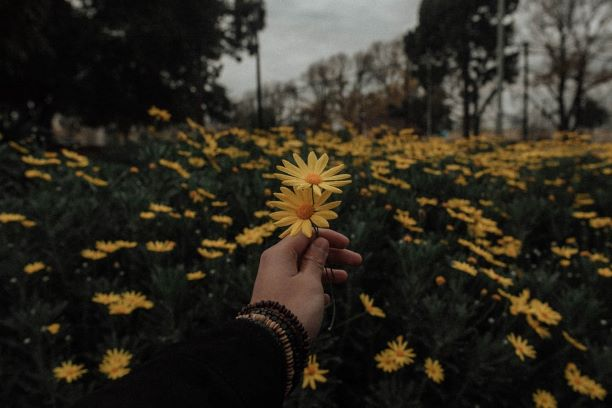

Hello, my name is Nathalia and I am a junior at Radford School. I am 16 years old and I love tho read. Something that I really enjoy and am always doing is photography. I love to take picures of nature, art, architecture and places that I have traveled. In addition I also enjoy making small movies of my adventures. I think that a picure is worth a thousand words and I really try to capure that in my photography.
click here for sample photos
I am a readerand I really love to read fantasy. My favorite books are the Harry Potter series. I have gone to Harry Potter world in Ornado and LA. I am a really big part of the community that the world has built and I am really proud of it. I also really like to keep up with the new things that are going on in the Wizarding World Community. But keep quiet we cant let the muggles find out we exist.
click here for the wizarding world
I love to go on adventures and travel the world. I also love it when I spend time with friends and family. So sometimes it is hard for people to keep up and know what Im doing. This is why I like to be active on my instagram. I can put pictures from my adventures and reach my friends from around the world.
click here for my instagram